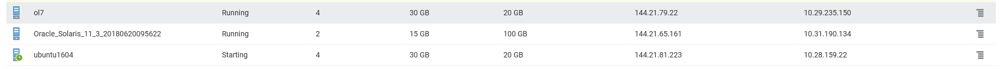

This was first published on https://www.dbi-services.com/blog/remote-syslog-from-linux-and-solaris/ (2018-06-20)
Republishing here for new followers. The content is related to the versions available at the publication date.
.
Auditing operations with Oracle Database is very easy. The default configuration, where SYSDBA operations go to ‘audit_file_dest’ (the ‘adump’ directory) and other operations go to the database may be sufficient to log what is done but is definitely not a correct security audit method as both destinations can have their audit trail deleted by the DBA. If you want to secure your environment by auditing the most privileged accounts, you need to send the audit trail to another server.
This is easy as well and here is a short demo involving Linux and Solaris as the audited environments. I’ve created those 3 computer services in the Oracle Cloud: 
So, I have an Ubuntu service where I’ll run the Oracle Database (XE 11g) and the hostname is ‘ubuntu’
root@ubuntu:~# grep PRETTY /etc/os-release
PRETTY_NAME="Ubuntu 16.04.4 LTS"
I have a Solaris service which will also run Oracle, and the hostname is ‘d17872’
root@d17872:~# cat /etc/release
Oracle Solaris 11.3 X86
Copyright (c) 1983, 2016, Oracle and/or its affiliates. All rights reserved.
Assembled 03 August 2016
I have an Oracle Enterprise Linux service which will be my audit server, collecting syslog messages from remote hosts, the hostname is ‘b5e501’ and the IP address in the PaaS network is 10.29.235.150
[root@b5e501 ~]# grep PRETTY /etc/os-release
PRETTY_NAME="Oracle Linux Server 7.5"
I start to ensure that syslog works correctly on my audit server:
[root@b5e501 ~]# jobs
[1]+ Running tail -f /var/log/messages &
[root@b5e501 ~]#
[root@b5e501 ~]# logger -p local1.info "hello from $HOSTNAME"
[root@b5e501 ~]# Jun 20 08:28:35 b5e501 bitnami: hello from b5e501
On the aduit server, I un-comment the lines about receiving syslog from TCP and UDP on port 514
[root@b5e501 ~]# grep -iE "TCP|UDP" /etc/rsyslog.conf
# Provides UDP syslog reception
$ModLoad imudp
$UDPServerRun 514
# Provides TCP syslog reception
$ModLoad imtcp
$InputTCPServerRun 514
# Remote Logging (we use TCP for reliable delivery)
I restart syslog service
[root@b5e501 ~]# systemctl restart rsyslog
Jun 20 08:36:47 b5e501 systemd: Stopping System Logging Service...
Jun 20 08:36:47 b5e501 rsyslogd: [origin software="rsyslogd" swVersion="8.24.0" x-pid="2769" x-info="http://www.rsyslog.com"] exiting on signal 15.
Jun 20 08:36:47 b5e501 systemd: Starting System Logging Service...
Jun 20 08:36:47 b5e501 rsyslogd: [origin software="rsyslogd" swVersion="8.24.0" x-pid="2786" x-info="http://www.rsyslog.com"] start
Jun 20 08:36:47 b5e501 systemd: Started System Logging Service.
I tail the /var/log/messages (which is my default destination for “*.info;mail.none;authpriv.none;cron.none”)
[root@b5e501 ~]# tail -f /var/log/messages &
[root@b5e501 ~]# jobs
[1]+ Running tail -f /var/log/messages &
I test with local1.info and check that the message is tailed even when logger is sending it though the network:
[root@b5e501 ~]# logger -n localhost -P 514 -p local1.info "hello from $HOSTNAME"
Jun 20 09:18:07 localhost bitnami: hello from b5e501
That’s perfect.
Now I can test the same from my Ubuntu host to ensure that the firewall settings allow for TCP and UDP on port 514
root@ubuntu:/tmp/Disk1# logger --udp -n 10.29.235.150 -P 514 -p local1.info "hello from $HOSTNAME in UDP"
root@ubuntu:/tmp/Disk1# logger --tcp -n 10.29.235.150 -P 514 -p local1.info "hello from $HOSTNAME in TCP"
Here are the correct messages received:
Jun 20 09:24:46 ubuntu bitnami hello from ubuntu in UDP
Jun 20 09:24:54 ubuntu bitnami hello from ubuntu in TCP
As I don’t want to have all messages into /var/log/messages, I’m now setting, in the audit server, a dedicated file for “local1” facility and “info” level that I’ll use for my Oracle Database audit destination
[root@b5e501 ~]# touch "/var/log/audit.log"
[root@b5e501 ~]# echo "local1.info /var/log/audit.log" >> /etc/rsyslog.conf
[root@b5e501 ~]# systemctl restart rsyslog
After testing the same two ‘logger’ commands from the remote host I check the entries in my new file:
[root@b5e501 ~]# cat /var/log/audit.log
Jun 20 09:55:09 ubuntu bitnami hello from ubuntu in UDP
Jun 20 09:55:16 ubuntu bitnami hello from ubuntu in TCP
Now that I validated that remote syslog is working, I set automatic forwarding of syslog messages on my Ubuntu box to send all ‘local1.info to the audit server’:
root@ubuntu:/tmp/Disk1# echo "local1.info @10.29.235.150:514" >> /etc/rsyslog.conf
root@ubuntu:/tmp/Disk1# systemctl restart rsyslog
This, with a single ‘@’ forwards in UDP. You can double the ‘@’ to forward using TCP.
Here I check with logger in local (no mention of the syslog host here):
root@ubuntu:/tmp/Disk1# logger -p local1.info "hello from $HOSTNAME with forwarding"
and I verify that the message is logged in the audit server into /var/log/audit.log
[root@b5e501 ~]# tail -1 /var/log/audit.log
Jun 20 12:00:25 ubuntu bitnami: hello from ubuntu with forwarding
Note that when testing, you may add “$(date)” to your message in order to see it immediately because syslog keeps the message to avoid flooding when the message is repeated. This:
root@ubuntu:/tmp/Disk1# logger -p local1.info "Always the same message"
root@ubuntu:/tmp/Disk1# logger -p local1.info "Always the same message"
root@ubuntu:/tmp/Disk1# logger -p local1.info "Always the same message"
root@ubuntu:/tmp/Disk1# logger -p local1.info "Always the same message"
root@ubuntu:/tmp/Disk1# logger -p local1.info "Always the same message"
root@ubuntu:/tmp/Disk1# logger -p local1.info "Always the same message"
root@ubuntu:/tmp/Disk1# logger -p local1.info "Then another one"
is logged as this:
Jun 20 12:43:12 ubuntu bitnami: message repeated 5 times: [ Always the same message]
Jun 20 12:43:29 ubuntu bitnami: Then another one
I hope that one day this idea will be implemented by Oracle when flooding messages to the alert.log 😉
The last step is to get my Oracle instance sending audit message to the local syslog, with facility.level local1.info so that they will be automatically forwarded to my audit server. I have to set audit_syslog_level to ‘local1.info’ and the audit_trail to ‘OS’:
oracle@ubuntu:~$ sqlplus / as sysdba
SQL*Plus: Release 11.2.0.2.0 Production on Wed Jun 20 11:48:00 2018
Copyright (c) 1982, 2011, Oracle. All rights reserved.
Connected to:
Oracle Database 11g Express Edition Release 11.2.0.2.0 - 64bit Production
SQL> alter system set audit_syslog_level='local1.info' scope=spfile;
System altered.
SQL> alter system set audit_trail='OS' scope=spfile;
System altered.
SQL> shutdown immediate;
Database closed.
Database dismounted.
ORACLE instance shut down.
SQL> startup
ORACLE instance started.
Total System Global Area 1068937216 bytes
Fixed Size 2233344 bytes
Variable Size 616565760 bytes
Database Buffers 444596224 bytes
Redo Buffers 5541888 bytes
Database mounted.
Database opened.
It is very easy to check that it works as the SYSDBA and the STARTUP are automatically audited. Here is what I can see in my audit server /var/log/audit.log:
[root@b5e501 ~]# tail -f /var/log/audit.log
Jun 20 11:55:47 ubuntu Oracle Audit[27066]: LENGTH : '155' ACTION :[7] 'STARTUP' DATABASE USER:[1] '/' PRIVILEGE :[4] 'NONE' CLIENT USER:[6] 'oracle' CLIENT TERMINAL:[13] 'Not Available' STATUS:[1] '0' DBID:[0] ''
Jun 20 11:55:47 ubuntu Oracle Audit[27239]: LENGTH : '148' ACTION :[7] 'CONNECT' DATABASE USER:[1] '/' PRIVILEGE :[6] 'SYSDBA' CLIENT USER:[6] 'oracle' CLIENT TERMINAL:[5] 'pts/0' STATUS:[1] '0' DBID:[0] ''
Jun 20 11:55:51 ubuntu Oracle Audit[27419]: LENGTH : '159' ACTION :[7] 'CONNECT' DATABASE USER:[1] '/' PRIVILEGE :[6] 'SYSDBA' CLIENT USER:[6] 'oracle' CLIENT TERMINAL:[5] 'pts/0' STATUS:[1] '0' DBID:[10] '2860420539'
In the database server, I have no more files in the adump since this startup:
oracle@ubuntu:~/admin/XE/adump$ /bin/ls -alrt
total 84
drwxr-x--- 6 oracle dba 4096 Jun 20 11:42 ..
-rw-r----- 1 oracle dba 699 Jun 20 11:44 xe_ora_26487_1.aud
-rw-r----- 1 oracle dba 694 Jun 20 11:44 xe_ora_26515_1.aud
-rw-r----- 1 oracle dba 694 Jun 20 11:44 xe_ora_26519_1.aud
-rw-r----- 1 oracle dba 694 Jun 20 11:44 xe_ora_26523_1.aud
drwxr-x--- 2 oracle dba 4096 Jun 20 11:48 .
-rw-r----- 1 oracle dba 896 Jun 20 11:48 xe_ora_26574_1.aud
I have also started a Solaris service:
opc@d17872:~$ pfexec su -
Password: solaris_opc
su: Password for user 'root' has expired
New Password: Cl0udP01nts
Re-enter new Password: Cl0udP01nts
su: password successfully changed for root
Oracle Corporation SunOS 5.11 11.3 June 2017
You have new mail.
root@d17872:~#
Here, I add the forwarding to /etc/syslog.conf (tab is a required separator which cannot be replaced with spaces) and restart the syslog service:
root@d17872:~# echo "local1.info\t@10.29.235.150" >> /etc/syslog.conf
root@d17872:~# svcadm restart system-log
Then logging a message locally
root@d17872:~# logger -p local1.info "hello from $HOSTNAME with forwarding"
Here is the messaged received from the audit server:
[root@b5e501 ~]# tail -f /var/log/audit.log
Jun 20 05:27:51 d17872.compute-a511644.oraclecloud.internal opc: [ID 702911 local1.info] hello from d17872 with forwarding
Here in Solaris I have the old ‘syslog’ with no syntax to change the UDP port. The default port is defined in /etc/services, which is the one I’ve configured to listen to on my audit server:
root@d17872:~# grep 514 /etc/services
shell 514/tcp cmd # no passwords used
syslog 514/udp
If you want more features, you can install syslog-ng or rsyslog on Solaris.
{kind=link}